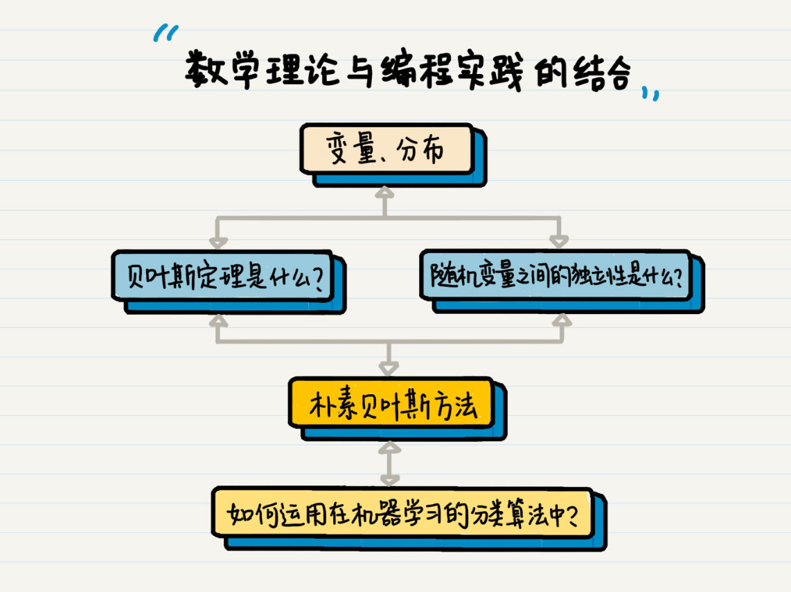

- 01 二进制：不了解计算机的源头，你学什么编程.md
- 02 余数：原来取余操作本身就是个哈希函数.md
- 03 迭代法：不用编程语言的自带函数，你会如何计算平方根？.md
- 04 数学归纳法：如何用数学归纳提升代码的运行效率？.md
- 05 递归（上）：泛化数学归纳，如何将复杂问题简单化？.md
- 06 递归（下）：分而治之，从归并排序到MapReduce.md
- 07 排列：如何让计算机学会“田忌赛马”？.md
- 08 组合：如何让计算机安排世界杯的赛程？.md
- 09 动态规划（上）：如何实现基于编辑距离的查询推荐？.md
- 10 动态规划（下）：如何求得状态转移方程并进行编程实现？.md
- 11 树的深度优先搜索（上）：如何才能高效率地查字典？.md
- 12 树的深度优先搜索（下）：如何才能高效率地查字典？.md
- 13 树的广度优先搜索（上）：人际关系的六度理论是真的吗？.md
- 14 树的广度优先搜索（下）：为什么双向广度优先搜索的效率更高？.md
- 15 从树到图：如何让计算机学会看地图？.md
- 16 时间和空间复杂度（上）：优化性能是否只是“纸上谈兵”？.md
- 17 时间和空间复杂度（下）：如何使用六个法则进行复杂度分析？.md
- 18 总结课：数据结构、编程语句和基础算法体现了哪些数学思想？.md
- 19 概率和统计：编程为什么需要概率和统计？.md
- 20 概率基础（上）：一篇文章帮你理解随机变量、概率分布和期望值.md
- 21 概率基础（下）：联合概率、条件概率和贝叶斯法则，这些概率公式究竟能做什么？.md
- 22 朴素贝叶斯：如何让计算机学会自动分类？.md
- 23 文本分类：如何区分特定类型的新闻？.md
- 24 语言模型：如何使用链式法则和马尔科夫假设简化概率模型？.md
- 25 马尔科夫模型：从PageRank到语音识别，背后是什么模型在支撑？.md
- 26 信息熵：如何通过几个问题，测出你对应的武侠人物？.md
- 27 决策树：信息增益、增益比率和基尼指数的运用.md
- 28 熵、信息增益和卡方：如何寻找关键特征？.md
- 29 归一化和标准化：各种特征如何综合才是最合理的？.md
- 30 统计意义（上）：如何通过显著性检验，判断你的A_B测试结果是不是巧合？.md
- 31 统计意义（下）：如何通过显著性检验，判断你的A_B测试结果是不是巧合？.md
- 32 概率统计篇答疑和总结：为什么会有欠拟合和过拟合？.md
- 33 线性代数：线性代数到底都讲了些什么？.md
- 34 向量空间模型：如何让计算机理解现实事物之间的关系？.md
- 35 文本检索：如何让计算机处理自然语言？.md
- 36 文本聚类：如何过滤冗余的新闻？.md
- 37 矩阵（上）：如何使用矩阵操作进行PageRank计算？.md
- 38 矩阵（下）：如何使用矩阵操作进行协同过滤推荐？.md
- 39 线性回归（上）：如何使用高斯消元求解线性方程组？.md
- 40 线性回归（中）：如何使用最小二乘法进行直线拟合？.md
- 41 线性回归（下）：如何使用最小二乘法进行效果验证？.md
- 42 PCA主成分分析（上）：如何利用协方差矩阵来降维？.md
- 43 PCA主成分分析（下）：为什么要计算协方差矩阵的特征值和特征向量？.md
- 44 奇异值分解：如何挖掘潜在的语义关系？.md
- 45 线性代数篇答疑和总结：矩阵乘法的几何意义是什么？.md
- 46 缓存系统：如何通过哈希表和队列实现高效访问？.md
- 47 搜索引擎（上）：如何通过倒排索引和向量空间模型，打造一个简单的搜索引擎？.md
- 48 搜索引擎（下）：如何通过查询的分类，让电商平台的搜索结果更相关？.md
- 49 推荐系统（上）：如何实现基于相似度的协同过滤？.md
- 50 推荐系统（下）：如何通过SVD分析用户和物品的矩阵？.md
- 51 综合应用篇答疑和总结：如何进行个性化用户画像的设计？.md
- 导读：程序员应该怎么学数学？.md
- 开篇词 作为程序员，为什么你应该学好数学？.md
- 数学专栏课外加餐（一） 我们为什么需要反码和补码？.md
- 数学专栏课外加餐（三）：程序员需要读哪些数学书？.md
- 数学专栏课外加餐（二） 位操作的三个应用实例.md
- 结束语 从数学到编程，本身就是一个很长的链条.md
开篇词 作为程序员，为什么你应该学好数学？
你好，我是黄申，目前在LinkedIn从事数据科学的工作，主要负责全球领英的搜索引擎优化，算法和数据架构的搭建。
2006年，我博士毕业于上海交通大学计算机科学与工程专业，在接下来十余年时间里，我曾经在微软亚洲研究院、IBM研究院、eBay中国研发中心做机器学习方向的研究工作，也负责过大润发飞牛网和1号店这两家互联网公司的核心搜索和推荐项目，还写过一本书《大数据架构商业之路》。
对于数学和计算机编程的联系，我之前也没有思考过。直到有一次，在硅谷的一个技术交流Meetup上，我听到一位嘉宾分享说：“如果你只想当一个普通的程序员，那么数学对你来说，并不重要。但是如果你想做一个顶级程序员，梦想着改变世界，那么数学对你来说就很重要了。”
听完这句话，我马上感受到强烈的共鸣，因为就我自己的工作经历而言，越是往高处走，就越能发现数学的重要性。我知道，数学对于我们每一个程序员来说，都是最熟悉的陌生人。你从小就开始学习数学，中考、高考、研究生考试还要考数学，所以那些熟悉的数学定理、数学公式，陪伴你至少也有10年时间了。
但是，自从做了程序员，你可能早就把数学抛在了脑后，甚至觉得曾经为了应试而“硬学”的数学应该是彻底没什么用了，终于可以和他们say goodbye了。毕竟作为一个基础学科，数学肯定是没操作系统、数据结构、计算机网络这样的课程看起来“实用”。
起码我之前就是这么认为的。大学的时候，我非常喜欢编程，甚至还翘过数学课，专门在图书馆看计算机类的图书。那会儿我觉得，数学这东西，完全就是应试教育，我更喜欢计算机这样操作类的课程，不喜欢待在教室里听数学老师讲那些枯燥的理论和定理。
再到后来，我读了硕士，开始接触机器学习，猛然间才发现，机器学习表面上是“写程序”，但实际上剥去外表，本质上就是在研究数学。从那会儿开始，我对数学的认知也才逐步客观和理性起来。
再到现在，我参加了工作，写了这么多年代码，我想说，数学学得好不好，将会直接决定一个程序员有没有发展潜力。因为往大了说，数学它其实是一种思维模式，考验的是一个人归纳、总结和抽象的能力。把这个能力放到程序员的世界里，其实就是解决问题的能力。
往小了说，不管是数据结构与算法还是程序设计，其实底层很多原理或者思路都是源自数学，所以很多大公司，在招人时，也会优先考虑数学专业的毕业生，这些人他们数学基础很好，学起编程也更容易上手。
所以我觉得，如果编程语言是血肉，数学的思想和知识就是灵魂。它可以帮助你选择合适的数据结构和算法、提升系统效率、并且赋予机器智慧。尤其是在大数据和智能化的时代，更是如此。
举个例子，比如我们小学就学到的余数，其实在编程的世界里也有很多应用。你经常用到的分页功能，根据记录的总条数和每页展示的条数，最后来计算整体的页数，这里面就会有余数的思想。再难一点，奇偶校验、循环冗余检验、散列函数、密码学等等都有余数相关的知识。
遇到这些问题的时候，你能说你不懂余数吗？我想你肯定懂，只是很多时候没有想到可以用余数的思想来解决相关问题罢了。那为什么没有想到呢？我认为，本质原因还是你没有数学思维，还是你数学的基础不够好。
所以，在这个专栏里，我想和你重点聊聊数学。当然，我知道数学博大精深，所以在一开始做专栏的时候，我就和极客时间团队一起定义好了专栏的边界，用一句话来说就是“只做程序员需要学的数学知识”。
首先，我梳理了编程中最常用的数学概念，由浅入深剖析它们的本质，希望能够帮你彻底掌握这些最基础、也最核心的数学知识。其中包括那些你曾经熟悉的数学名词，比如数学归纳法、迭代法、递归、排列、组合等等。
其次，我把线性代数和概率统计中的抽象概念、公式、定理都由内而外地讲了出来，并分析它们在编程中的应用案例，帮助你提升编程的高阶能力。对于这些内容，我会从基本的概念入手，结合生活和工作中的实际案例，让你更轻松地理解概念的含义。
比如，对于朴素贝叶斯方法，我会从基本的随机现象、随机变量和概率分布等着手。随后，我会逐步深入，结合这些数学知识在编程算法中的应用进行展开。比方说，贝叶斯定理是什么，随机变量之间的独立性是什么，这些是如何构成朴素贝叶斯方法的，而最终朴素贝叶斯又是如何被运用在机器学习的分类算法之中的。

这样的讲解路线，既能让你巩固基础的概念和知识，同时也能让你明白这些基础性的内容，对计算机编程和算法究竟意味着什么。
不过话又说回来，我认为数学理论和编程实践的结合其实是“决裂”的，所以学习数学的时候，你不能太功利，觉得今天学完明天就能用得着，我觉得这个学习思路可以用在其他课程上，但放在数学里绝对不合适。
因为数学知识总是比较抽象，特别是概率统计和线性代数中的概率、数据分布、矩阵、向量等概念。它们真的很不好理解，也需要我们花时间琢磨，但是对于高级一点的程序设计而言，特别是和数据相关的算法，这些概念就非常重要了，这可都是先人总结出来的经验。
如果你能够将这些基本概念和核心理论都搞懂、搞透，那么面对系统框架设计、性能优化、准确率提升这些难题的时候，你就能从更高的角度出发去解决问题，而不只是站在一个“熟练工”的视角，去增删改查。
最后，我希望数学能够成为你的一种基础能力，希望这个专栏能帮你用数学思维来分析问题和解决问题。数学思想是启发我们思维的中枢，如果你对数学有更好的理解，遇到问题的时候就能追本溯源，快、准、稳地找到解决方案。
伽利略曾经说过，“宇宙这本书是用数学语言写成的”，数学是人类科学进步的重要基础，所以，你我都要怀着敬畏的心态去学习、思考数学。同样，我还要求我自己的孩子一定要学好数学，因为我确信，这对于他未来的发展来说，至关重要。
编程的世界远不止条件和循环语句，程序员的人生应当是创造的舞台。我希望，通过这个专栏的学习，能够让你切实感受到数学这个古老学科的活力和魅力。
好了，说了这么多，相信你已经下定决心和我一起攻克数学。重新开始就要告别过去，你可以在留言区做个“数学学习复盘”，在之前的学习过程中，你的学习状况是怎样的？你遇到的最大困难是什么？现在，你最希望学到的是什么？
Now，你说，我听！
© 2019 - 2023 Liangliang Lee. Powered by gin and hexo-theme-book.